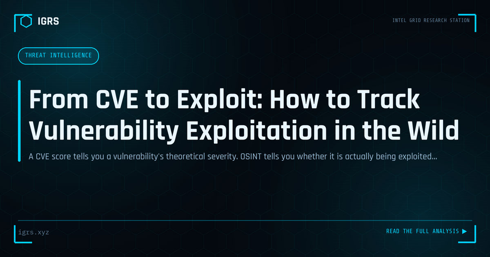

From CVE to Exploit: How to Track Vulnerability Exploitation in the Wild
| File No. | IGRS-024/2026 |
| Subject | OSINT methodology for tracking CVE exploitation activity and assessing real-world risk |
| Category | Threat Intelligence |
| Author | Manuj Kumar Pandey |
| Published | 2026-05-02 |
| Reading time | 6 minutes |
A CVE score tells you a vulnerability's theoretical severity. OSINT tells you whether it is actually being exploited. How to bridge the gap between disclosure and defensive action.
The problem with CVSS scores alone
CVSS (Common Vulnerability Scoring System) scores are ubiquitous in vulnerability management, but they measure theoretical severity, not actual exploitation risk. A CVSS 9.8 vulnerability may sit unexploited for years while a CVSS 6.5 finding is weaponized within hours of public disclosure. The operational question is not "how bad could this be?" but "is this being exploited right now, and are we a likely target?" OSINT can answer the second question in ways that CVSS cannot.
The exploitation signal chain
When a vulnerability is discovered and made public, exploitation typically follows a predictable signal chain. Security researchers publish proof-of-concept (PoC) code — often on GitHub, ExploitDB, or in blog posts. Threat actors (ranging from script kiddies to APT groups) test and weaponize the PoC. Mass scanning for vulnerable hosts begins within hours on Shodan, Censys, and similar platforms. Exploitation at scale follows, often with honeypot detections appearing on platforms like Greynoise and SANS Internet Storm Center. Understanding this chain lets defenders assess their exposure window and prioritise patching accordingly.
Sources to monitor
- NVD (nvd.nist.gov): The authoritative CVE database; watch for the addition of CISA KEV (Known Exploited Vulnerabilities) catalog entries — these confirm active exploitation
- CISA KEV catalog: Only lists CVEs with confirmed real-world exploitation; if your unpatched vulnerability appears here, treat it as an emergency
- GitHub: Search for the CVE number to find PoC repositories; check creation date and star count to gauge researcher and attacker attention
- Greynoise and Shodan: Show mass internet scanning targeting specific vulnerabilities; "Greynoise tagged" CVEs are being actively scanned
- Twitter/X and security blogs: Researcher disclosure and exploitation reports often appear here before formal advisories
Assessing your exposure
Once you identify that a CVE affecting your software is being actively exploited, the next question is your exposure. Use Shodan or Censys to check if your organization has externally-visible instances of the affected product. Check internally whether the software version is deployed. Query your EDR or vulnerability scanner for the specific indicator. This exposure assessment, combined with exploitation prevalence data, gives you a defensible prioritisation rationale for emergency patching.